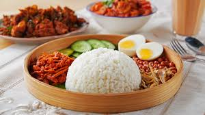

Nasi Lemak
History: Originally an agrarian meal, farmers and fishermen ate this heavy carbohydrate dish for sustained energy over a long day. It is now the national dish of Malaysia.
View Cooking InstructionsIngredients:
- 2 cups Basmati Rice
- 1 cup Coconut Milk & 1 Pandan Leaf
- For Sambal: Dried chilies, belacan (shrimp paste), onions, garlic, tamarind, sugar.
- Garnish: Fried anchovies (ikan bilis), peanuts, cucumber, hard-boiled egg.
How to Cook:
- Wash rice and cook with coconut milk, water, and pandan leaf in a rice cooker.
- Blend sambal ingredients and sauté in oil until fragrant and oil separates. Add tamarind juice, sugar, and salt.
- Fry anchovies and peanuts until crunchy.
- Serve rice hot accompanied by sambal and garnishes.